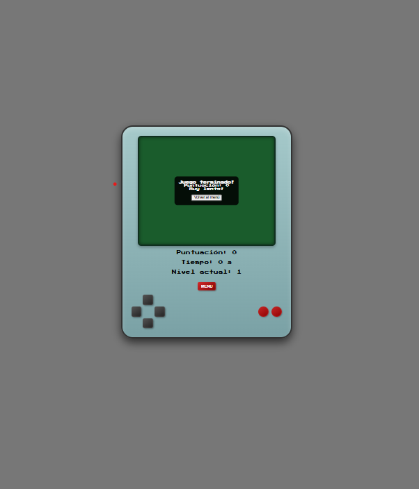

Dan Ortega – Web Developer
Sobre mí
Soy un desarrollador web con una sólida base en frontend y creciente experiencia en backend. Me apasiona crear aplicaciones funcionales, intuitivas y bien estructuradas, donde el diseño y el código se unan para ofrecer experiencias digitales atractivas.
Cuento con formación en Desarrollo de Aplicaciones Web y experiencia profesional previa en gestión informática y soporte administrativo durante más de 10 años, lo que me ha permitido desarrollar competencias como resolución de problemas, organización, adaptabilidad y trabajo en equipo.
Entre mis habilidades técnicas destaco el manejo de HTML, CSS, JavaScript, Python, SQL, así como experiencia con React, Node.js, Git/GitHub y diferentes entornos de desarrollo (VS Code, IntelliJ, NetBeans). También he trabajado con bases de datos (MySQL, Oracle, DB Browser).
🚀 Actualmente estoy abierto a oportunidades de prácticas o proyectos colaborativos donde pueda aplicar mis conocimientos, seguir aprendiendo y aportar valor a equipos dinámicos.
Proyectos Destacados
Gestor de Tareas Avanzado
Aplicación web interactiva para organizar tareas con prioridad, filtros, edición, búsqueda y contador de pendientes.

- Añadir tareas con Enter o botón
- Prioridad y resaltado automático
- Orden inteligente y dinámico
- Editar y borrar tareas con botones
- Filtros y búsqueda en tiempo real
- Contador de tareas pendientes
- Modo oscuro
Juego de Reacción
Un divertido juego para poner a prueba tu rapidez: haz clic en la pantalla cuando el color cambie y mide tus reflejos.
- Detección de reflejos en milisegundos
- Rondas aleatorias
- Estadísticas de tus tiempos
- Diseño minimalista y responsive